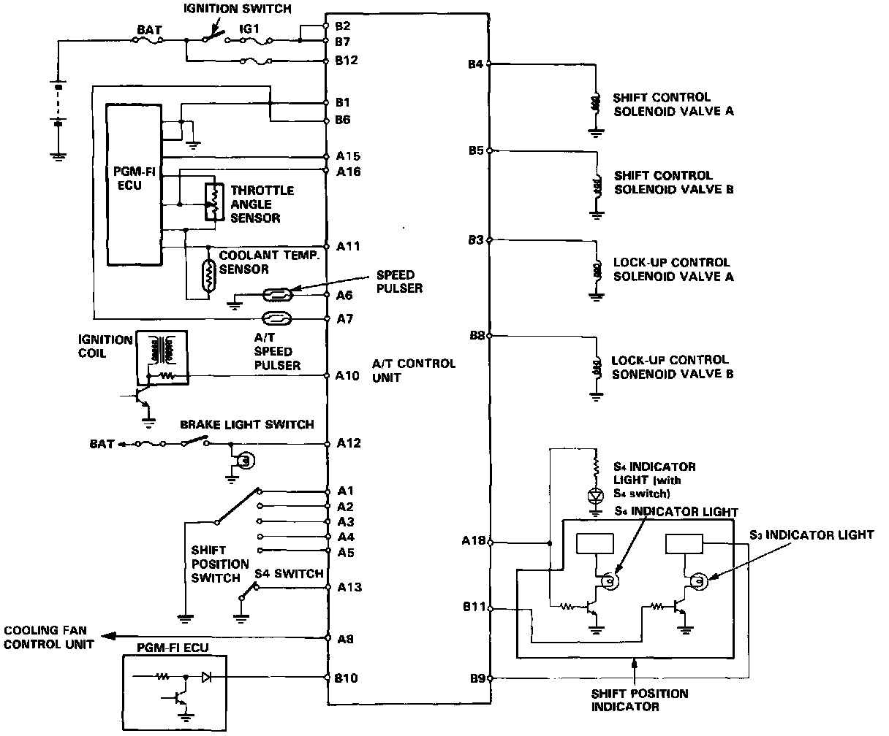

Sedan

A/T Control Unit
- From various input signals, the A/T control unit controls the shift control solenoid valves A and B and the lock-up control solenoid valves A and B.
- The A/T control unit is located under the passenger's seat.
- The A/T control unit has a self-diagnosis function that indicates the area of trouble with the number of blinks of the self-diagnosis indicator (LED).
B1: Ground
B2: Power source (IG1)
B3: Sends driving signal to lock-up control solenoid valve
B4: Sends driving signal to shift control solenoid valve A
B5: Sends driving signal to shift control solenoid valve B
B6: Ground
B7: Power source (IG1)
B8: Sends driving signal to lock-up control solenoid valve
B9: Sends dimming cancel signal to S3 indicator light
B10: Senses compensation signal of shift timing and lock-up control
B11: Sends driving signal to S3 indicator light
B12: Power source (BAT)
A1: Senses R range signal
A2: Senses N range signal
A3: Senses D range signal
A4: Senses S range signal
A5: Senses 2 range signal
A6: Senses signal from speed pulser
A7: Senses signal from A/T speed pulser B
A8: Senses cooling fan control unit signal
A10: Senses ignition pulse
A11: Senses voltage signal in accordance with the engine coolant temperature
A12: Senses ON/OFF of brake signal
A13: Senses ON/OFF of S4 switch signal
A15: Senses standard voltage of sensors
A16: Senses voltage signal in accordance with the throttle opening
A18: Sends driving signal to S4 indicator light